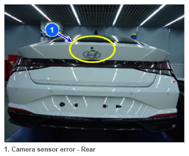
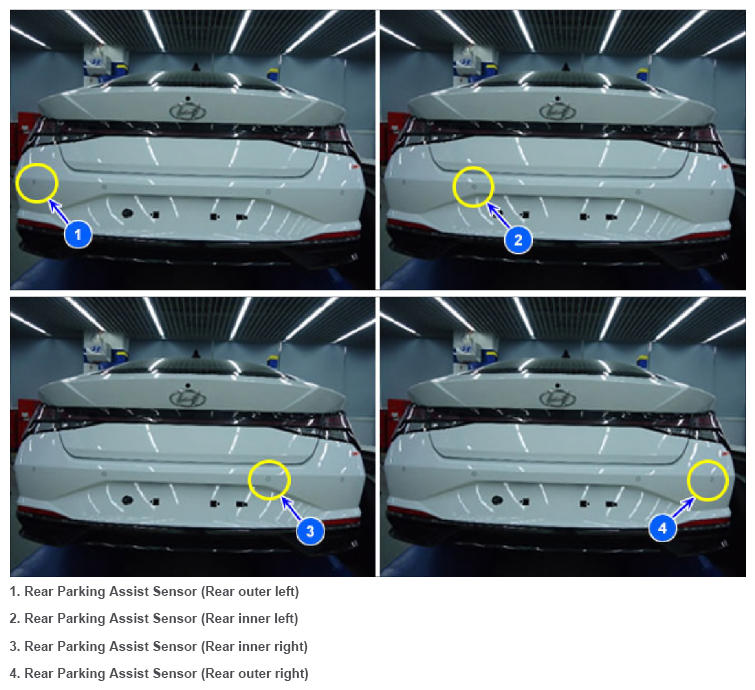

Parking Distance Warning Sensor
 Courtesy of HYUNDAI MOTOR AMERICA
|
The camera sensor for PCA_R operation is installed around, the rear side of the vehicle, trunk door handle and it detects pedestrians behind the vehicle.
 Courtesy of HYUNDAI MOTOR AMERICA
|
The ADAS_PRK consists of many ultrasonic sensors: 4 rear sensors. The front and rear sensors senses an object in front of and behind the vehicle while the side ones search for parking spaces.